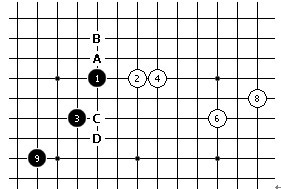

【茶馆专题】雪飞老师讲牵制
牵制，是五子棋攻防中应用非常广泛的一个技巧。那么，什么是牵制呢？我们说一手棋是牵制，它牵制的是什么。
简单的说，牵制就是一手可以让对手无法攻击的棋，对手如果攻击，我可以形成反击。牵制，牵的是对手的攻击，让对手无法攻击，实现的方式是形成反。所以，从本质上可以把牵制手看作是，利用反的防点。
一、对攻击牵制的效果：
1、完全牵制：比如一个活二，活三的方向有两个，都可以形成反，这叫完全牵制。
2、部分牵制：只能对一个活三的方向形成牵制，这叫部分牵制。
二、反的形式：能形成反说明比后续攻击的先手级别要高
比如对活三级别的反：可以是反活三，反做四三等。
下面结合图例来说明

白棋进攻方向：右边
反活三。A、B、C三个牵制点，B最强强制点
一路攻击
/*760*90，创建于2012-2-9*/ var cpro_id = 'u761865';
［ 被感动的人 于 2011-2-13 0:28:31 时花20金币送鲜花一朵］
［ 被感动的人 于 2011-2-13 18:47:37 时花20金币送鲜花一朵］
［ 被感动的人 于 2011-2-13 18:47:57 时花20金币送鲜花一朵］